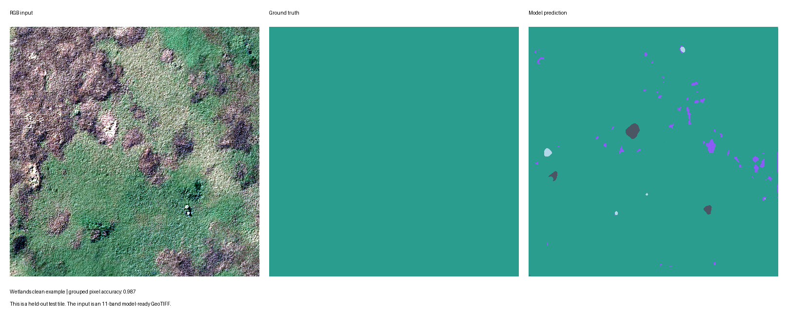
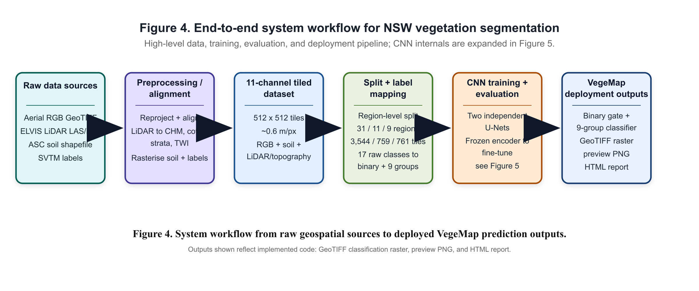
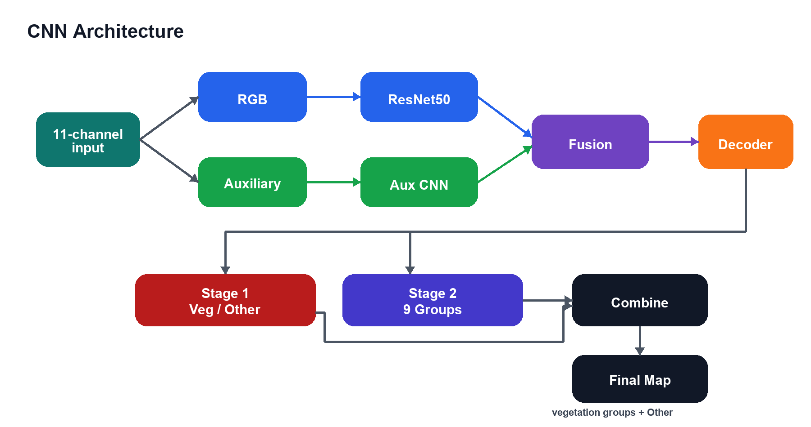
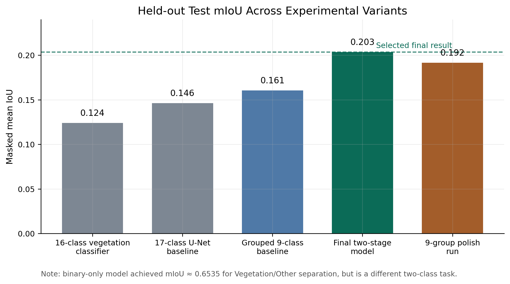
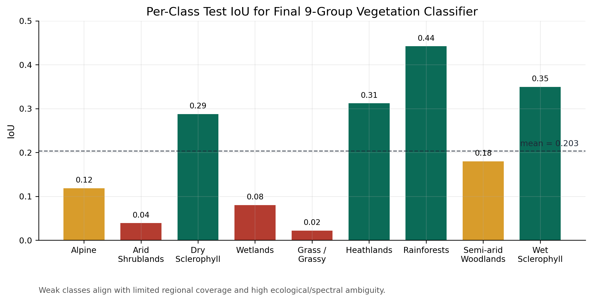

Input
Prepared 11-band GeoTIFF tiles, or raw RGB imagery paired with ELVIS LAS/LAZ point-cloud archives.
Deep Learning · Geospatial Inference
A browser-based tool and FastAPI backend for classifying NSW vegetation from multi-channel GeoTIFF tiles, aerial imagery, LiDAR point clouds, and ASC soil data.

Problem
Prepared 11-band GeoTIFF tiles, or raw RGB imagery paired with ELVIS LAS/LAZ point-cloud archives.
Two-stage U-Net style segmentation with a ResNet50 encoder: vegetation gate first, grouped vegetation class prediction second.
Colour-coded classification map, class fractions, prediction GeoTIFF, and a downloadable HTML report.
Architecture
The frontend validates GeoTIFF inputs, extracts bounds for LiDAR ordering, and sends inference requests to the backend. The backend loads TensorFlow weights, preprocesses raw geospatial inputs when needed, and returns prediction rasters and preview images.


Model
The final pipeline separates vegetation from non-target land cover before classifying vegetation pixels into nine grouped formations. This makes the output easier to inspect and reduces pressure on the second classifier to model background pixels.
Evaluation
Binary gate test mIoU
Nine-group classifier test mIoU
Input channels
Tile size in pixels


Run locally
cd backend
python3.11 -m venv .venv
source .venv/bin/activate
pip install -r requirements.txt
uvicorn main:app --host 127.0.0.1 --port 8000
cd ..
python3 -m http.server 8080 --bind 127.0.0.1Large model weights and ASC soil files are documented in the repository README and are intentionally kept outside normal Git history.